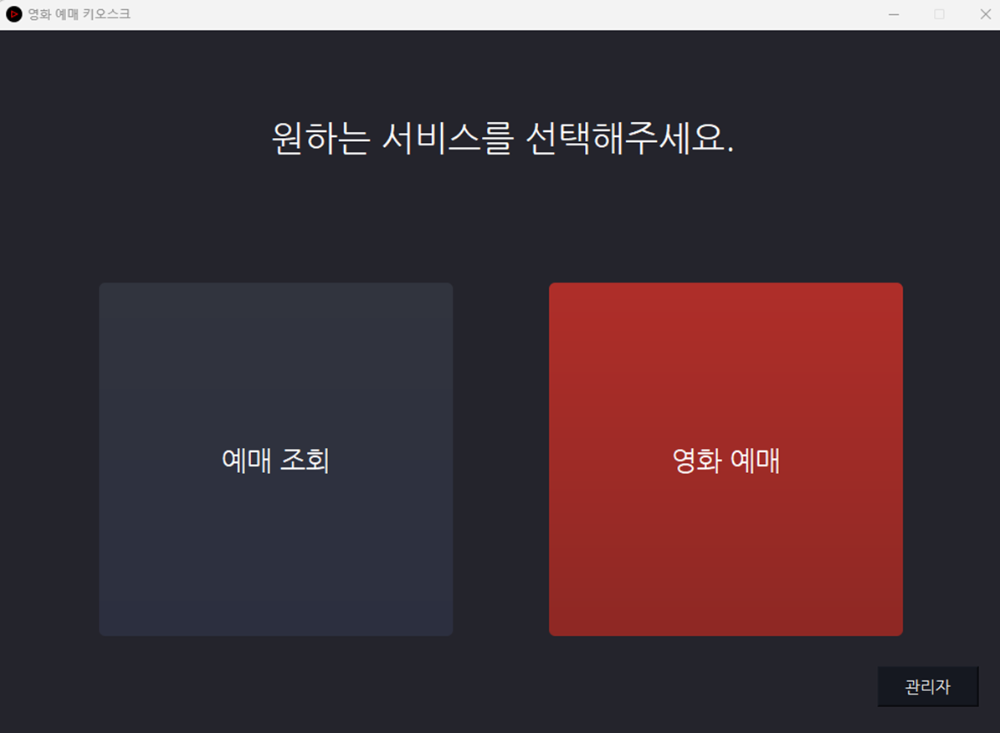
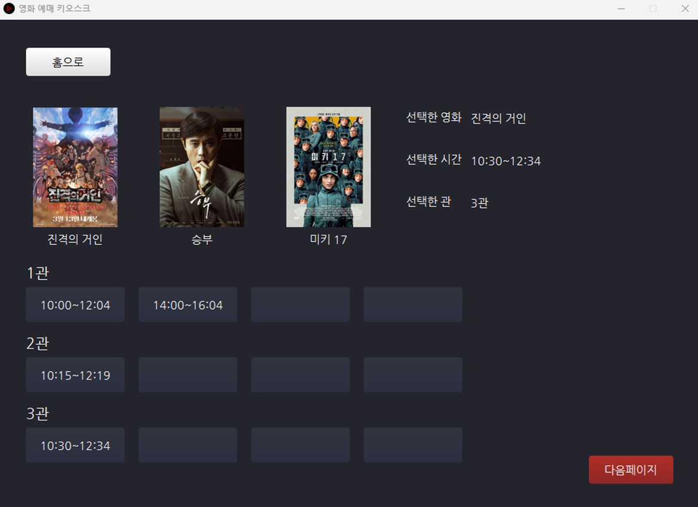
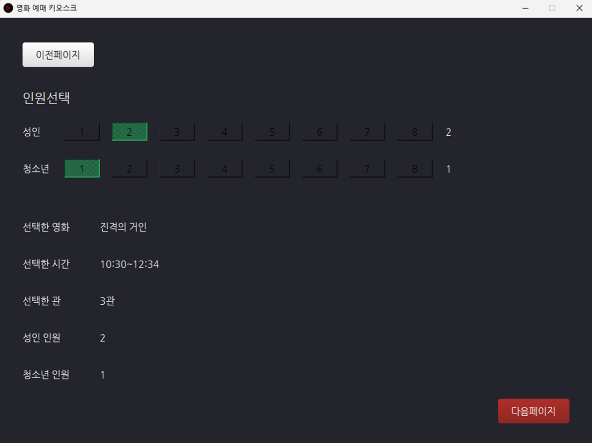
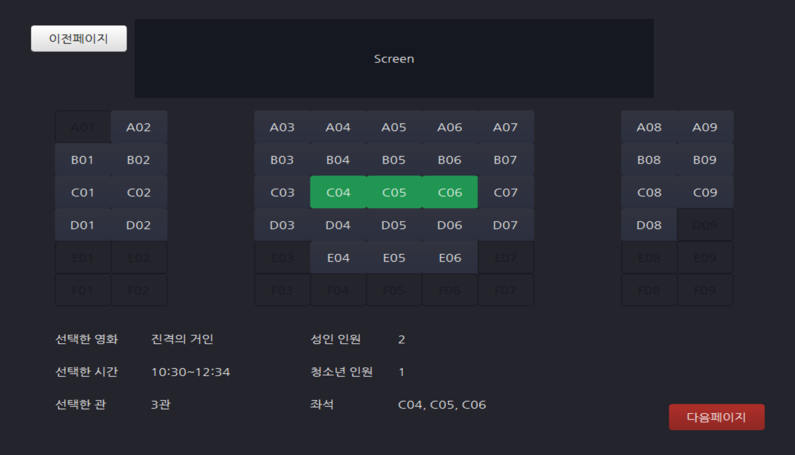
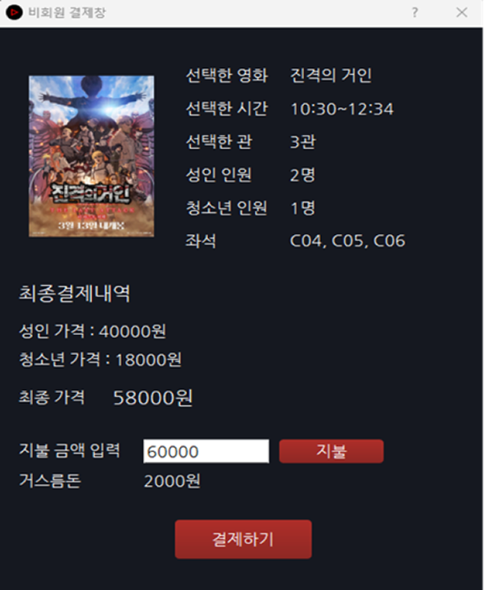
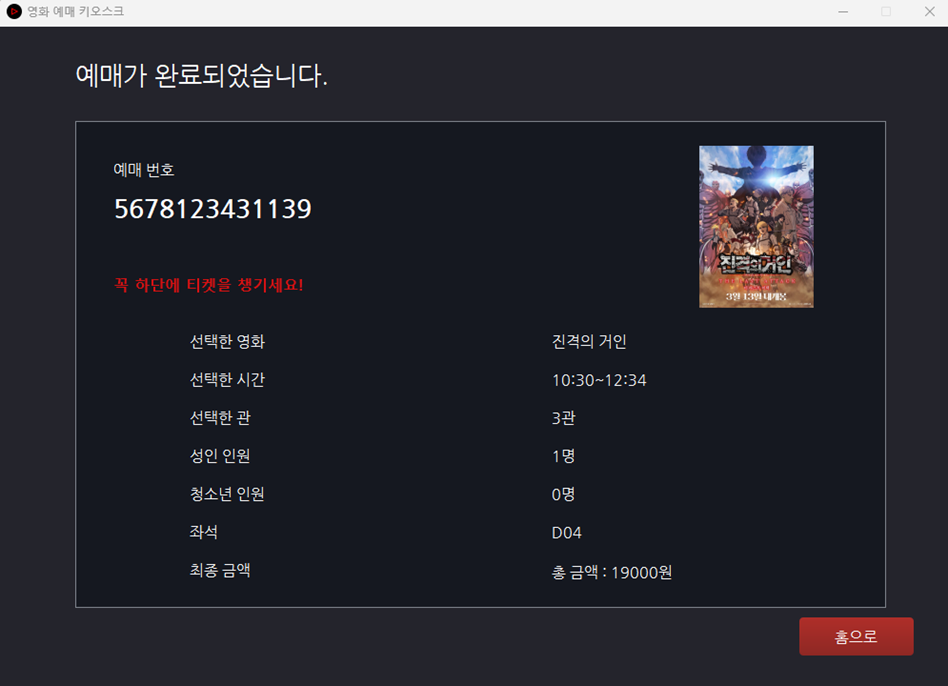
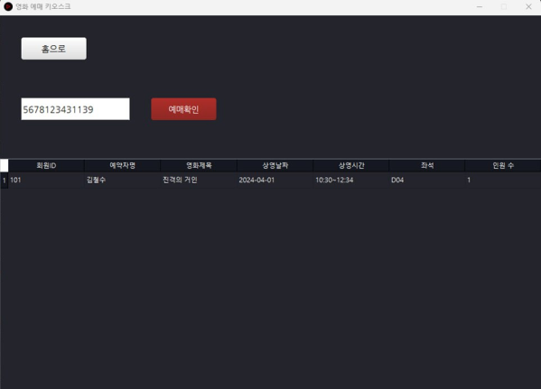
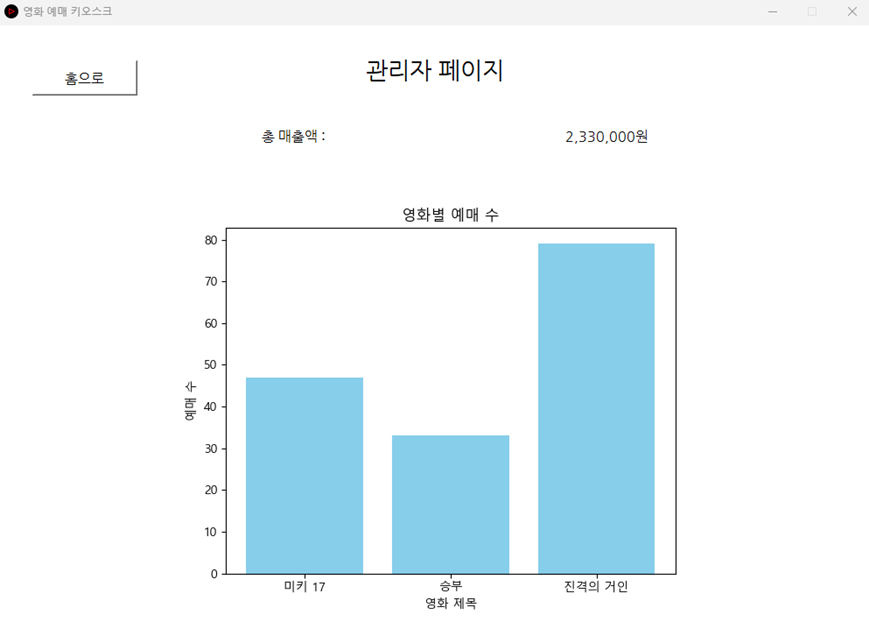

메인페이지
메인 화면에서 예매 조회, 영화 예매, 관리자 페이지로 직관적으로 이동할 수 있도록 구현했습니다.

const developer = {
name : “정희성”,
Frontend : [“HTML”, “CSS”, “JavaScript”, "React"],
Backend : [“Spring Boot”,“Node.js”],
Data Analysis : “Python”,
Database : [“Oracle”, “MongoDB”, “PostgreSQL”, “MySQL”],
Design Tools : [“Photoshop”, “Illustrator”, “Figma”],
DevOps & Tools : [“Github”, “Docker”, “Linux”],
Big Data : [“Hadoop”, “Kafka”],
BaaS : [“Firebase”, “Supabase”]
};
SPA 원리를 이해하고자 직접 라우팅을 구현하여 소통 커뮤니티 사이트를 개발하였습니다. BaaS로 Supabase를 활용해 많은 기능들을 구현했습니다. 라이브러리 없이 순수 자바스크립트로 구성함으로써 프론트엔드의 구조적 이해와 백엔드 연동 경험을 함께 쌓을 수 있었습니다.
사람들이 실시간으로 제보하여 소식을 알릴 수 있는 커뮤니티, 보안등과 CCTV 정보를 지도에 시각화해 보다 안전한 길로 갈 수 있도록 하는 웹사이트를 만들었습니다.
역할 : 프론트엔드 (주제 아이디어 제시, ERD 설계, 웹 디자인 전체, 홈 화면 구현, 글쓰기 구현, 게시판 구현, 분석 페이지 차트 구현)
PyQt5 기반 GUI 프로그램으로 영화 예매, 좌석 선택, 결제 시연, 예매 조회, 관리자 통계 기능까지 포함된 영화 예매 키오스크입니다.
역할 : Figma를 활용한 UI 설계, 좌석 선택 페이지, 전반적인 코드 컨벤션 통일, .exe 빌드 및 배포 구현
2025년 경상남도 빅데이터 분석 공모전에 참가한 프로젝트로, 경남 지역의 인구 감소와 지역 문화 자원의 분포 및 활용 현황 간의 연관성을 분석하고, 그 결과를 바탕으로 데이터 기반 문제점과 해결 방안을 도출한 프로젝트입니다.
학습한 내용을 꾸준히 정리하여 보기 좋게 재구성한 뒤 부족한 내용들은 검색을 통해 보완했습니다. 지속적인 업데이트를 통해 지식의 깊이를 넓히고 있으며, 이 과정을 통해 자기 주도 학습 역량을 키워나가고 있습니다.
더 나은 개발자로 성장하기 위해 여러분들의 의견을 듣고 싶습니다.
부족한 점이나 개선이 필요한 부분이 있다면 자유롭게 남겨주세요. 감사합니다! 🙏
메인페이지
메인 화면에서 예매 조회, 영화 예매, 관리자 페이지로 직관적으로 이동할 수 있도록 구현했습니다.

영화 선택
메인 페이지에서 '영화 예매' 버튼을 클릭하면, 데이터베이스에 저장된 최신 영화 3편의 각 영화의 상영 시간 및 관 정보가 자동으로 불러와지는 예매 페이지로 이동합니다.

인원 선택
영화 선택 이후, 성인과 청소년 인원 수를 각각 선택할 수 있으며, 각 카테고리별로 한 번에 하나의 인원 버튼만 선택 가능하도록 제약을 두어 사용자의 실수를 방지했습니다.

좌석 선택
선택된 성인과 청소년 인원 수를 기준으로 한 줄 좌석이 자동으로 선택되도록 구현했습니다. 또한, 이미 예매된 좌석은 데이터베이스에서 정보를 불러와 선택할 수 없도록 처리했고, 한 줄로 선택 가능한 좌석이 부족할 경우에는 선택 자체가 불가능하도록 제약 조건을 두었습니다.

결제창
좌석 선택 이후, 성인과 청소년 인원 수에 따라 각각의 요금을 자동 계산하도록 구현했습니다. 실제 결제 기능은 구현하지 않았지만, 사용자가 결제 금액을 입력한 뒤 '지불' 버튼을 눌러 결제가 완료되었다고 가정하는 방식으로 결제 플로우를 시뮬레이션했습니다.

결제 결과
결제가 완료된 후에는 사용자가 선택한 모든 정보를 확인할 수 있도록, 영수증 형태의 결과 화면을 구현했습니다. 해당 화면을 통해 선택한 영화, 시간, 관, 인원, 좌석, 최종 금액 등을 한 눈에 확인할 수 있습니다.

예매 조회
결제 완료 시 제공되는 예매 번호를 통해 예매 조회가 가능하며, 예약자명, 영화 제목, 상영 날짜 및 시간, 좌석 번호, 인원 수 등 상세한 예매 정보를 확인할 수 있도록 구현했습니다.

관리자 페이지
메인 페이지에서 '관리자' 버튼 클릭 시, 사전에 등록된 관리자 계정으로 로그인할 수 있도록 구현했습니다. 로그인에 성공하면 총 매출액과 영화별 예매 수가 실시간으로 반영되어 시각화된 대시보드 화면을 확인할 수 있습니다.
